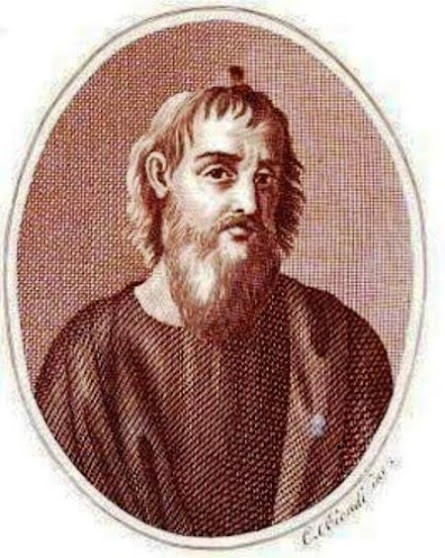

Голограммы и оптические иллюзии
Конспект урока
Голограммы
Голография — метод регистрации информации, основанный на интерференции волн. Изображение, получаемое с помощью голографии, называется голограмма. При этом сохраняется ощущение глубины пространства и многоракурсность, а изображение выглядит, как вид на снятый предмет через окно, которым служит голограмма.
История создания голограмм
Объемное изображение, получаемое в результате преломления лучей, начало изучаться относительно недавно. Однако мы уже можем говорить о существовании истории его изучения. Деннис Габор, английский ученый, в 1948 году впервые определил, что такое голография. Это открытие было очень важным, но его большое значение в то время не было еще очевидным. Работавшие в 1950-е годы исследователи страдали от отсутствия источника света, обладающего когерентностью, – очень важным свойством для развития голографии.
Первый лазер был изготовлен в 1960 году. С помощью этого прибора можно получить свет, имеющий достаточную когерентность. Юрис Упатниекс и Иммет Лейт, американские ученые, использовали его для создания первых голограмм. С их помощью получались трехмерные изображения предметов.
Свойства голограмм
1. В любую точку плоской голограммы «по Габору» попадает свет, отраженный от всех точек предмета. Это означает, что любой, самый маленький ее участок содержит зрительную информацию обо всем предмете. Голограмму можно разбить на несколько кусков, и каждый будет полностью воспроизводить первоначальное изображение. Отпечаток голограммы, где черные полосы стали прозрачными и наоборот, дает то же изображение, что исходная голограмма. Ни фотография, ни голограмма «по Денисюку» таким свойством не обладает.
2. Голографическое изображение можно увеличить на стадии восстановления. Когда голограмму записывают параллельным световым пучком, а восстанавливают расходящимся, изображение увеличивается пропорционально углу расхождения (геометрический коэффициент увеличения kг). Если запись ведется излучением длиной волны l1, а восстановление – кратной ему l2 > l1, изображение станет больше в k = l2/l1 раз (волновой коэффициент увеличения kв). Полное увеличение равно произведению обоих коэффициентов; например, для рентгеновского микроскопа (l1 = 10–2 мкм, l2 = 0,5 мкм) с kг = 200 полное увеличение k = 106.
3. Если на одну пластинку записать несколько голограмм, используя разные, но не кратные, длины волн, все они могут быть считаны независимо при помощи лазеров с соответствующим излучением. Таким же образом можно записать и полноцветное изображение.
4. Голограмму можно рассчитать и нарисовать при помощи компьютера и даже вручную. Так, зонную пластинку Френеля нетрудно начертить, получив простейшую голограмму одной точки, но чем сложнее объект, тем более запутанной становится такая искусственная голограмма.
5. В то время как обычное фотографическое изображение фиксирует изменение интенсивности света, голография фиксирует как интенсивность, так и фазу света. Вот почему голограммы создают действительно трехмерные изображения, а не просто создают иллюзию глубины.
Преимущества и недостатки
Плюсы:
1. Голографическое изображение – хороший способ хранения визуальной информации.
2. Качество изображения: Голограммы позволяют создавать реалистичные, яркие и детализированные изображения, которые могут быть использованы для рекламы, маркетинга, образования и других целей.
3. Интерактивность: Голограммы могут быть интерактивными, что позволяет пользователям взаимодействовать с изображением, например, перемещаться по нему или изменять его параметры.
4. Экономическая выгода: Использование голограмм может сократить затраты на печать и распространение рекламных материалов, а также повысить их эффективность.
5. Персонализация: Голограммы можно персонализировать, добавляя на них логотипы, имена и другие элементы, что делает их более привлекательными для потребителей.
Минусы:
1. Ограничения в размерах: Голограммы ограничены в размерах, так как для их создания требуется большое количество материала и оборудование.
2. Высокая стоимость: Создание голограмм может быть дорогим, особенно если учитывать стоимость оборудования и материалов.
3. Ограниченная доступность: Голограммы доступны не везде и не всегда, что может затруднить их использование.
4. Ограниченное применение: Некоторые виды голограмм могут иметь ограниченное применение, например, для сохранения конфиденциальности информации или защиты от подделки.
Сферы использования
Образование
Использование трехмерных технологий в образовании делает процесс обучения более интерактивным и наглядным. Например, можно рассмотреть парящую в воздухе 3D-модель Земли, чертеж здания или детально воссозданную кровеносную систему человека.
Бизнес
В 2017 году сотрудники Мюнхенского технического университета разработали технологию получения трехмерных голограмм помещений с помощью Wi-Fi-роутера. Они позволяют воссоздавать любые интерьеры, от небольших квартир до огромных бизнес-центров.
Медицина
Операция на сердце, проведенная в Сингапуре в 2022 году, наглядно демонстрирует пользу голографических технологий в медицине. Хирурги оперировали на сердце в очках Hololens 2, а перед ними в центре комнаты парила голограмма сердца пациента, созданная из снимков его компьютерной томографии.
Коммуникации
В научной фантастике голограммы часто используются как способ связи. До появления парящих в воздухе голограмм как в «Звездных войнах» человечеству еще далеко, но уже сделаны существенные шаги. В 2017 году состоялся первый полноценный голографический звонок при помощи технологии 5G.
Искусство
Российская компания SILA SVETA создает шоу на стыке искусства и высоких технологий с помощью голографических проекций и световых инсталляций для крупных артистов и коммерческих клиентов. Популярная японская певица Хацунэ Мику существует только в виртуальной реальности.
Защитные технологии
Голографические защитные изображения представляют собой наклейки с переливающимся металлизированным рисунком, используются для защиты товара от подделок и вскрытия, предотвращения фальсификации документов и изделий.
Оптические иллюзии
Оптическая иллюзия - это ошибка в зрительном восприятии, вызванная неточностью или неадекватностью процессов неосознаваемой коррекции зрительного образа, а также физическими причинами.
История оптических иллюзий восходит к V веку до н. э., когда, в Древней Греции, Эпихарм впервые представил объяснение этого явления. Эпихарм полагал, что даже если наш ум знает и понимает все ясно, органы чувств обманывают нас и представляют собой оптическую иллюзию.
Виды оптических иллюзий:
1. Буквальная иллюзия (мы видим предмет не таким, какой он есть на самом деле);
2. Физиологическая иллюзия (эффект, воздействующий на глаза и мозг, например, яркость, цвет, размер, положение предмета, наклон, движение);
3. Когнитивная иллюзия (неверное восприятие изображения нашим мозгом).
Типы оптических иллюзий:
1. Естественные (созданные природой);
2. Искусственные (созданные человеком);
3. Смешанные (естественные иллюзии, во созданные человеком).
Пример оптической иллюзии - мираж
Мираж - это оптическое явление в атмосфере. Оно вызвано преломлением потока света на границе между разными по температуре слоями воздуха. То есть, когда луч меняет направление, переходя из слоя воздуха одной температуры в слой воздуха другой температуры, мы видим мираж.
Виды миражей:
Нижний мираж
Возникает когда внизу расположен более теплый воздух, чем сверху, наиболее распространенный вид (пустыни)
Верхний мираж
Противоположность нижнего миража (на полюсах)
Боковой мираж
Отражает как нижний мираж, только от вертикальной поверхности
Фата-Моргана
Самый сложный из миражей, состоит из нескольких слоев воздуха разной температуры
Брокенский призрак
Мираж, возникающий с помощью тумана и солнца (в горах)
Зеленый луч
Завязан на спектре солнечных лучей, виден на воде во время заката
Отличия голограмм и оптических иллюзий
Отличий между голограммой и оптической иллюзией достаточно много, и они связаны с принципами образования и восприятия изображений. Рассмотрим основные различия между ними.
Голограммы
Образование:
Голограмма создается путем записи интерференционной структуры на фотопластинке с помощью лазерного излучения. Эта структура кодирует информацию о трехмерном объекте.
Воспроизведение:
При просмотре голограммы с использованием правильного источника света (например, лазерного) создается ощущение пространственной глубины и объема объекта, так как голограмма сохраняет информацию о фазе и амплитуде света, взаимодействующего с изображаемым предметом.
Эффект:
Голограмма дает ощущение трехмерности и реалистичности объекта, который кажется лежащим в трехмерном пространстве, со всеми деталями, перспективой и глубиной.
Оптические иллюзии
Образование:
Оптические иллюзии создаются за счет использования оптических принципов, таких как перспектива, градиенты яркости, цветовые контрасты и т. д., для обмана зрительной системы.
Воспроизведение:
При просмотре оптической иллюзии ложное восприятие возникает из-за внезапных изменений в яркости, цвете, форме или положении изображений.
Эффект:
Оптические иллюзии могут вызывать искажение размеров, форм и глубины объектов, создавать ложные движения или обманывать восприятие пространства.
Вывод:
Таким образом, главное различие между голограммой и оптической иллюзией заключается в том, что голограмма представляет собой пространственное изображение, сохраняющее трехмерные свойства объекта, в то время как оптическая иллюзия работает на основе визуального обмана, который изменяет восприятие размеров, форм или положения объектов без создания реальной трехмерной структуры.
Эксперименты
1. Голограмма на пластинке
В основе голограммы лежит то, что на пластинке записывается интерференционная картина, возникающая при сложении двух пучков света - предметного, который отражается от объектов, и опорного, который падает на пластинку.
Интерференция – это результат сложения волн, при котором они, смешиваясь, дают чередование тёмных и светлых полос (отражаясь от разных точек, проходят разный путь и сдвигаются на разную величину).
Для записи голограммы подходит только лазер. В фотографии используются химические проявители, формирующие из восстановленного серебра длинные металлические нити, которые поглощают свет. В голографии иначе, формируются более мелкие частицы серебра сферической формы, отражающие свет.
Для изготовления голограммы использовались два разных метода по схемам Денисюка.
Вариант 1:
На заполненную песком/сахаром/солью широкую тарелку устанавливаются предметы, которые планируется снять. Лазер располагается от предметов на расстоянии 20 см и падает под углом 34 градуса к вертикали. После этого включается зелёный свет с помощью батарейки и светодиода (к такому свету не чувствительны голографические пластинки), красный лазер закрывается высокой книгой до момента записи голограммы. Пластинка располагается эмульсией к предмету и облокачивается на него. Верхний торец пластинки заклеивается самоклейкой, чтобы свет лазера не попадал в стекло через боковую грань (это чревато появлением радужных полос). Затем книга поднимается на 10 секунд. Запись окончена.
Вариант 2:
Предмет съёмки располагается на полу между тремя опорами. Лазер направляется под углом 34 градуса к горизонтали и располагается также на 20 см от предмета. Лазер закрывается большой книгой до момента записи. Включается зелёный свет. Торец пластинки заклеивается самоклейкой. Затем книга поднимается на 10 секунд. Запись окончена.
Проявка:
Пластинку с записью опускают в проявитель на 10 минут эмульсией вверх (40 мл проявителя, 120 мл воды). Для надёжности зелёный свет в помещении выключают, оставляя пластинку в темноте.
Фиксаж:
Спустя 10 минут пластинку на 1-2 минуты в фиксаж. Затем пластинка промывается в холодной воде 1-2 минуты и остаётся сушиться на 40 минут и более.
Для просмотра голограммы необходим точечный источник света, например, фонарик смартфона. Пластинка располагается эмульсией от себя, источник света чуть выше пластинки.